祛痘ContactorTrouble Contactor
专为炎症肌肤打造的高端解决方案
问题性肌肤的解决之道，在于舒缓肌肤、缓解炎症。
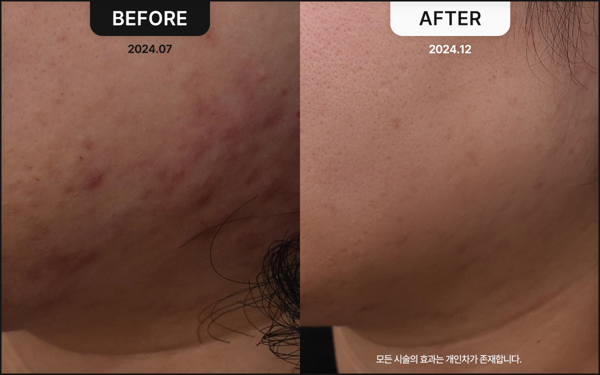
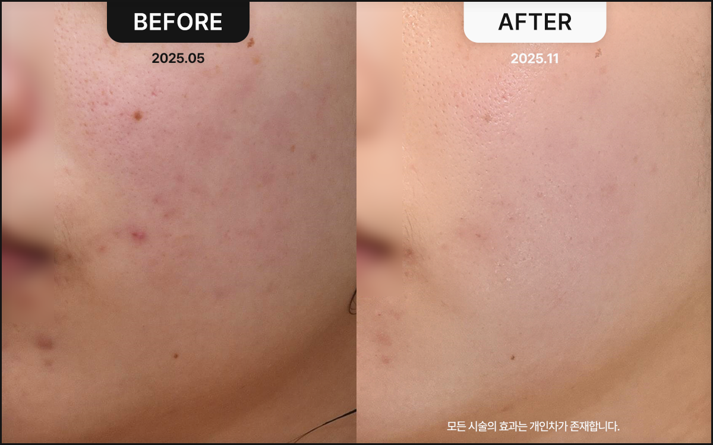
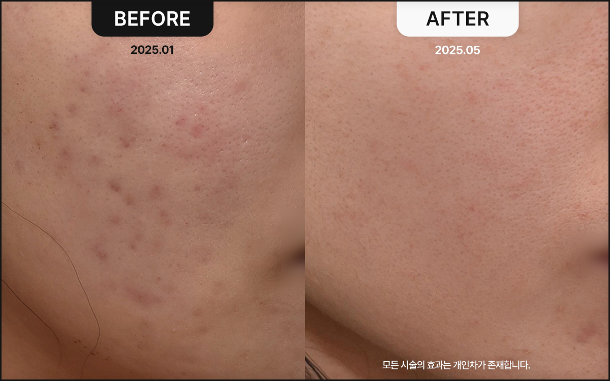
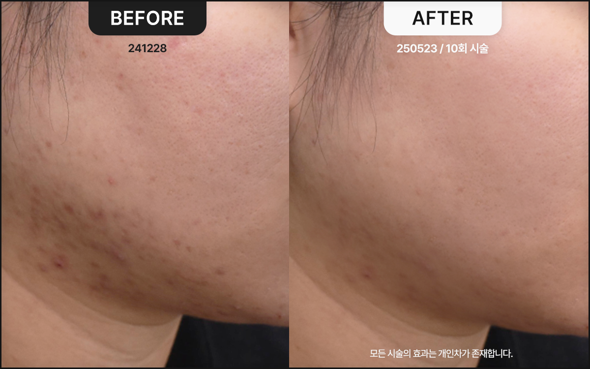
什么是祛痘Contactor？
祛痘Contactor
是以天然来源抗炎成分为基础的肌肤营养针， 有助于舒缓痘痘等肌肤问题，修复受损肌肤。
是一项缓解炎症、促进再生、减少痘痘、养出健康肌肤的优选治疗。

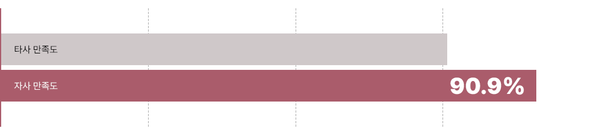
治疗前后的显著差异
您可以亲自确认祛痘Contactor的效果。
众多好评与满意度见证的祛痘Contactor效果 治疗满意度 体验过祛痘Contactor的顾客 整体治疗满意度（2024.09） 推荐意愿 体验过祛痘Contactor的顾客 “推荐意愿”回答平均值（2024.10）
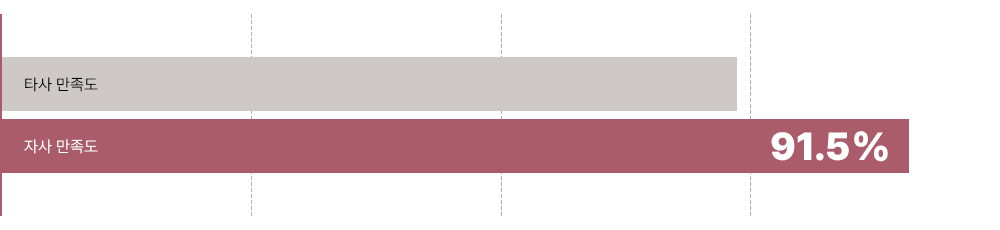
祛痘Contactor，推荐给以下人群。
痘痘频发或炎症反复的人群 希望快速舒缓并修复皮肤损伤与炎症的人群 希望护理因痘痘问题而变得敏感的肌肤的人群
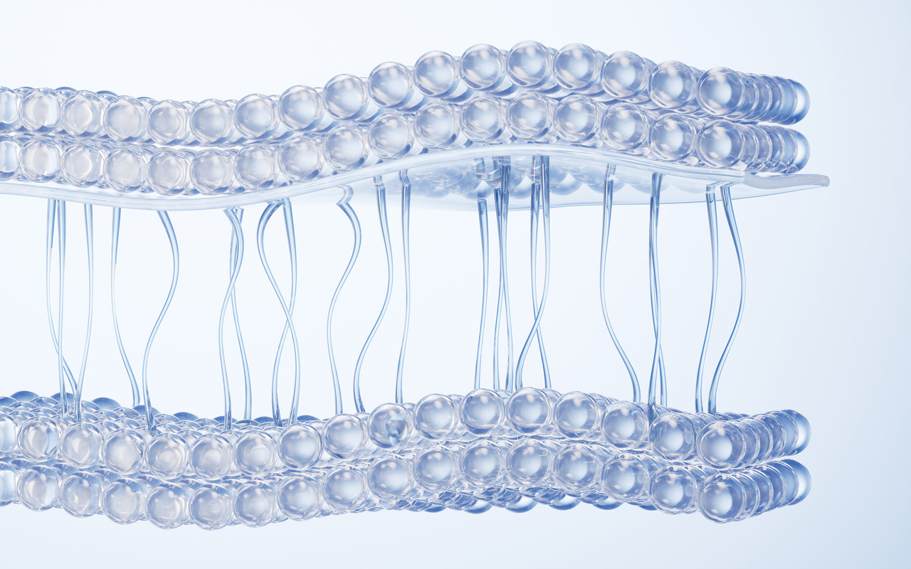
问题性肌肤的优选项目
祛痘Contactor
不刺激肌肤，以天然成分缓解炎症与痘痘， 并促进肌肤再生。强化皮肤屏障、预防痘痘， 温和改善痘痘与受损肌肤。
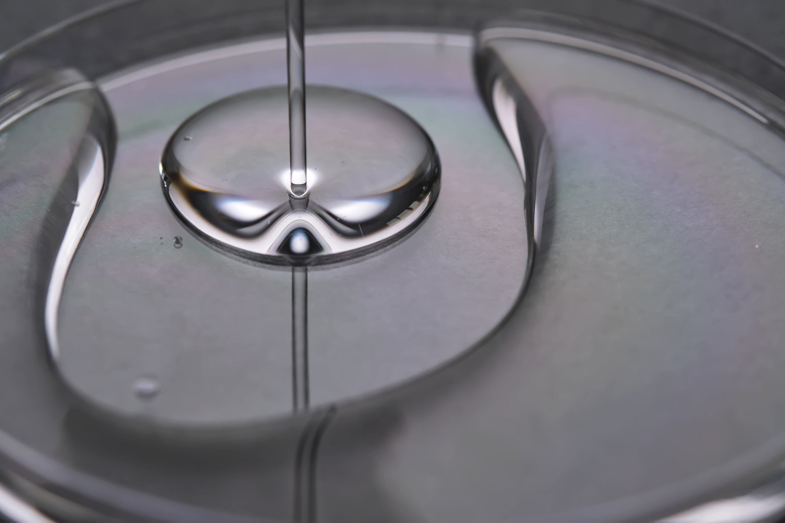
祛痘Contactor的使用方式
缓解炎症、舒缓肌肤 天然抗炎成分快速抑制炎症， 舒缓肌肤问题，温和无刺激地 修复受损肌肤。
促进肌肤再生、改善损伤 作用于受损的皮肤组织， 促进细胞再生，让因痘痘问题 受损的肌肤健康恢复。
治疗当天即可正常生活的项目 担心治疗后被人看出来吗？
祛痘Contactor即使在治疗当天也毫无负担， 也能轻松如常生活。
恢复异常皮肤组织的再生能力 毛孔治疗之所以困难，是因为需要 多种皮肤治疗的综合配合。
祛痘Contactor可同时治疗多种复合问题。

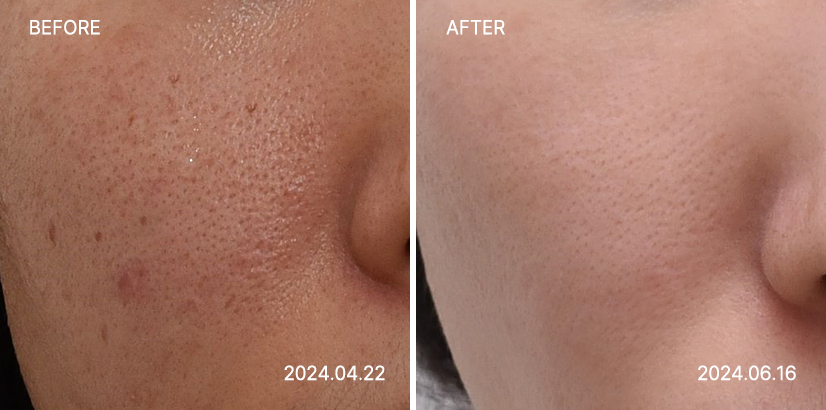
缓解炎症、舒缓肌肤
天然抗炎成分快速抑制炎症，
舒缓肌肤问题，温和无刺激地 修复受损肌肤。
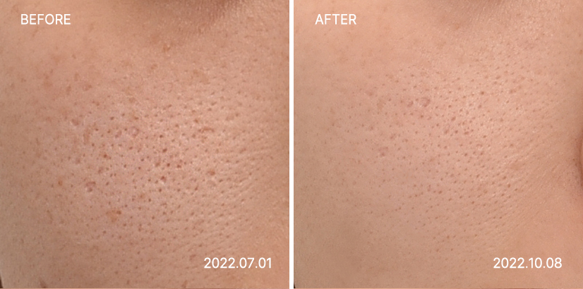

促进肌肤再生、改善损伤
作用于受损皮肤组织，促进细胞再生，
让因痘痘受损的肌肤健康恢复。
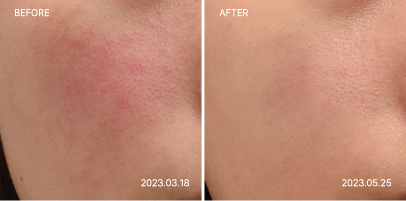

治疗当天即可正常生活的项目
担心治疗后被人看出来吗？
祛痘Contactor即使在治疗当天也毫无负担， 也能轻松如常生活。
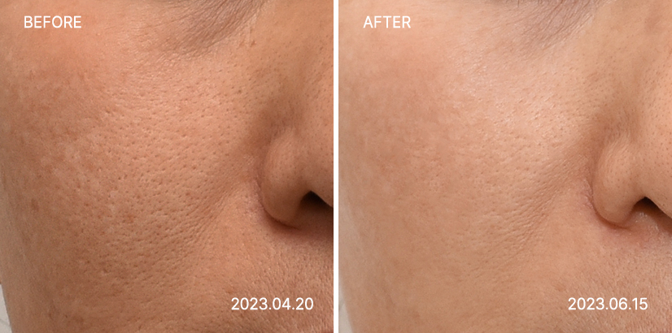

恢复异常皮肤组织的再生能力
毛孔治疗之所以困难，是因为治疗需要
多种皮肤治疗的综合配合。
祛痘Contactor可同时治疗多种复合问题。
痘痘严重时也能接受治疗吗？
可以。祛痘Contactor以抗炎成分为基础，
对炎症性痘痘也可安全使用， 温和舒缓肌肤，毫无刺激。
需要做几次才能看到效果？
建议至少进行3~5次治疗， 效果可能因痘痘的严重程度而异。
治疗后即可体验立竿见影的舒缓效果。
治疗后皮肤会变得更敏感吗？
祛痘Contactor采用天然抗炎成分， 最大限度减少刺激，敏感肌肤也适用， 其配方可确保治疗后皮肤不会变得更加敏感。
除了痘痘，对皮肤损伤也有效吗？
是的，祛痘Contactor不仅针对痘痘， 对因外界刺激而受损的肌肤 也能快速修复，效果显著。
祛痘Contactor


为您呈现最健康的美丽——
Medical Bloom 韩医院的承诺
1:1肌肤状态与设计咨询
通过与院长的充分沟通，细致检查您的问题部位、肌肤状态与肤质特点。 综合考虑您所追求的美丽与面部状态，为您提出最合适的个人定制面部设计方案。
两位韩医院长的
特别专属管理
从咨询到治疗，我们把您的肌肤当作家人挚友的肌肤，以无微不至的细心与专注悉心呵护。 将韩医学视角融入肌肤美容，辅以血脉与肌肉的刺激，健康与美丽兼得。
无副作用的健康之美
我们把您的肌肤健康与满意度放在首位。 为了杜绝治疗后令人痛心的副作用，我们在检查与咨询环节力求万全，药针与韩药原料坚持只选用温和亲肤的天然韩药材。
正品高端仪器与
足量规范治疗
Medical Bloom 为顾客使用的所有仪器与药品均为正品，并按照您面部所需的定制剂量精准施治，不多也不少。